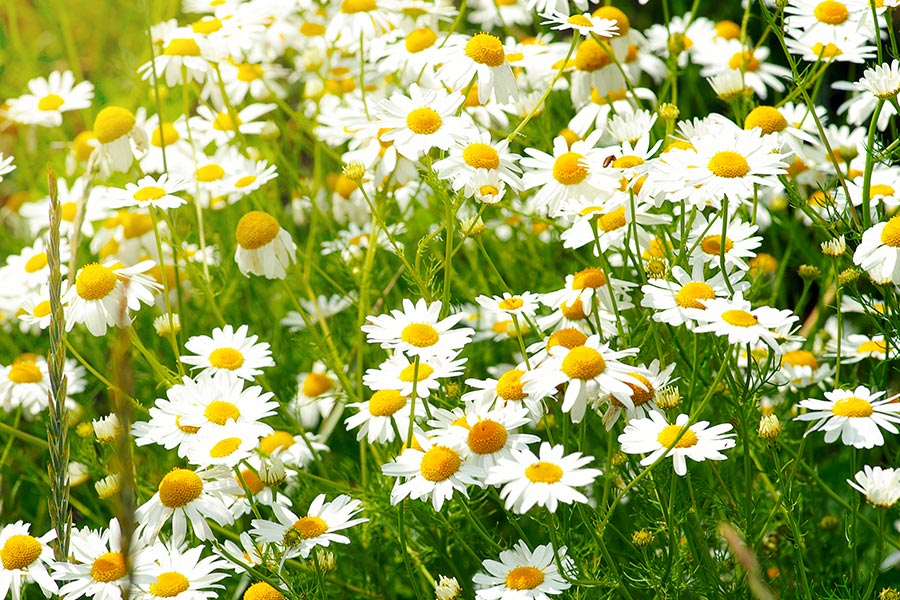

Ayuntamiento de Senés
JARDIN BOTANICO DE ESPECIES AUTOCTONAS DE SENES

Bellis perennis

La margarita (Bellis perennis) es una planta herbácea perenne muy común en praderas, campos y zonas abiertas del ámbito mediterráneo. Se trata de una de las flores más reconocibles por su sencillez y por su amplia distribución en distintos ecosistemas.
Presenta un porte bajo, generalmente entre 10 y 30 cm de altura, formando pequeñas rosetas de hojas a ras de suelo. Sus flores son solitarias, con un característico centro amarillo rodeado de lígulas blancas, aunque pueden presentar tonalidades rosadas en algunas variedades. Su aspecto sencillo y equilibrado la convierte en una especie muy apreciada tanto en entornos naturales como en jardinería.
La margarita es originaria de Europa y se encuentra ampliamente distribuida en regiones templadas. Crece de forma espontánea en praderas, jardines, márgenes de caminos y zonas de pasto, adaptándose con facilidad a distintos tipos de suelo.
En la Sierra de los Filabres y en el entorno de Senés, aparece en áreas abiertas con cierta humedad estacional, especialmente tras las lluvias, formando parte del paisaje primaveral y contribuyendo a la diversidad vegetal.
La margarita ha sido utilizada tradicionalmente en medicina popular por sus propiedades antiinflamatorias, cicatrizantes y expectorantes. Sus flores y hojas se han empleado en infusiones y preparados naturales.
También se ha utilizado en aplicaciones tópicas para aliviar pequeñas heridas, contusiones y afecciones cutáneas, formando parte del conocimiento tradicional sobre plantas medicinales.
La margarita simboliza la pureza, la inocencia y la sencillez. Su estructura equilibrada y su aspecto delicado la han convertido en un símbolo universal de belleza natural.
También se asocia con la infancia, la renovación y la espontaneidad, siendo una flor muy presente en tradiciones populares y juegos simbólicos.
En Senés, la margarita silvestre, se denomina "moino". Se utilizaba por sus prropiedades curativas, expectorante, diurética, cicatrizante, digestiva, laxante, purgativa y otras. Los tallos tiernos eran comestibles y en tiempos de miseria la utilizaban como comida.
Aunque su uso principal ha sido ornamental y paisajístico, también se ha conocido por sus aplicaciones tradicionales en remedios caseros, especialmente en el ámbito doméstico.
La margarita florece principalmente en primavera, aunque en condiciones favorables puede prolongar su floración durante buena parte del año. Sus flores se abren con la luz del sol y se cierran al anochecer o en condiciones adversas.
El nombre científico Bellis perennis significa “hermosa todo el año”, en referencia a su capacidad de florecer durante largos periodos.
La margarita es conocida por su comportamiento heliotrópico, orientando sus flores hacia la luz solar. Además, ha sido protagonista de juegos populares como el conocido “me quiere, no me quiere”.